Almost everyone who cares about photography has noticed this quiet frustration: you upload a high-resolution, tack-sharp photograph to an Instagram Story, and it looks immaculate. But the moment you add a 15-second music sticker or an animated timestamp, the entire canvas softens. Edges blur slightly, smooth color gradients break into faint stepped bands, and delicate textures turn into flat planes. To understand why this happens and quantify exactly what information is stripped away, I built a controlled experimental pipeline dubbed VCR (Video Compression Recovery).
The Root Cause: The Container Switch
The degradation is not a mystery of network throttling; it is an inevitable consequence of media architecture. When an image is posted alone, mobile clients serve it as a static compressed bitmap (JPEG or WebP). Modern image codecs preserve high spatial frequency details and full color fidelity with dedicated 2D compression tables.
However, digital container formats cannot interleave an independent audio stream (AAC) with a static image file. The instant music is attached, the platform's ingest pipeline converts the static photo into an active video stream (typically encoded via H.264/AVC or H.265/HEVC). This fundamental format transition introduces three distinct layers of irreversible quality degradation:
- Chroma Subsampling (4:2:0): The full RGB color space is converted to YUV420p, immediately discarding 75% of chromatic spatial resolution by sharing single chrominance values across $2\times 2$ pixel clusters.
- DCT Quantization & Macroblocking: Video encoders partition frames into $16\times 16$ or $8\times 8$ macroblocks. High spatial frequency discrete cosine transform (DCT) coefficients are aggressively quantized because human vision tolerates high-frequency loss during motion—an assumption that completely fails for static photography.
- Temporal Noise & Encoder Jitter: Even when feeding the exact same still image frame after frame, temporal prediction loops, rate controllers, and inter-frame filters introduce subtle variations between adjacent frames.
The VCR Experimental Pipeline
To isolate and visualize these distortions systematically without relying on subjective visual inspection, I designed
an automated Python workflow (photo_denoise_workflow.py) using FFmpeg and NumPy:
1. Source Ingestion: Ingest an uncompressed still photograph ($I_{\text{orig}}$).
2. Video Encoding: Encode the still into a standard H.264 video stream (libx264, yuv420p, 1 fps) matching the native pixel dimensions of the source photograph for durations ranging from 45 seconds to 600 seconds.
3. Single-Frame Extraction: Extract a target representative frame ($I_{\text{frame}}$ at frame index 10).
4. Multi-Frame Temporal Stacking: Decompose all $N$ frames of the video and compute the temporal ensemble average: \[I_{\text{stacked}} = \frac{1}{N}\sum_{k=1}^{N} I_k\] This temporal stacking operates as a low-pass temporal filter to test whether multi-frame noise averaging can cancel encoder fluctuations and reconstruct lost high-frequency details.
5. Diagnostic Difference Mapping: Compute three distinct difference maps using FFmpeg's histogram-equalized difference filter:
-filter_complex "blend=all_mode=difference,format=gray,histeq"
Privacy & Visualization Note:
To protect personal privacy while providing maximal diagnostic clarity, no original photographs or raw video frames are displayed on this page. All figures shown below are the histogram-equalized difference maps. Applying histogram equalization stretching ($|A - B| \to \text{gray} \to \text{histeq}$) amplifies minute, sub-perceptual quantization errors and phase shifts into high-contrast structural spectrograms, exposing macroblock boundaries, ringing artifacts, and temporal drift patterns directly.
The Three Diagnostic Metrics
For every test case, three difference maps are generated:
-
$D_{FO}$ (Original vs. Single Frame,
diff_fo): Quantifies total instantaneous single-frame degradation. It captures the combined distortion of 4:2:0 chroma downsampling, DCT block truncation, and intra-frame quantization. -
$D_{SO}$ (Original vs. Stacked Frame,
diff_so): Quantifies the permanent, irreversible data loss. Because temporal stacking cancels out random frame-to-frame noise, any residual difference that remains in $D_{SO}$ represents systematic, unrecoverable data erasure caused by the codec. -
$D_{FS}$ (Single Frame vs. Stacked Frame,
diff_fs): Isolates intra-stream temporal noise and encoder jitter. It reveals how individual frames fluctuate over time despite the input being an entirely static image.
Experimental Matrix & Summary
| Case | Resolution | Duration / Frames | Video Bitrate | Key Characteristics Analyzed |
|---|---|---|---|---|
| CASE 1 | 720 × 1280 (9:16) | 45 sec (45 frames) | 210 kbps | Mobile Story aspect ratio; heavy macroblock grid dominance |
| CASE 2 | 3024 × 4032 (12MP) | 60 sec (60 frames) | 657 kbps | Native vertical capture; edge ringing and high-frequency texture loss |
| CASE 3 | 3024 × 4032 (12MP) | 60 sec (60 frames) | 900 kbps | High-entropy textured scene; maximum codec bitrate allocation |
| CASE 4 | 3024 × 4032 (12MP) | 60 sec (60 frames) | 627 kbps | Smooth tonal transitions; planar color banding & chroma smearing |
| CASE 5 | 3024 × 4032 (12MP) | 60 sec (60 frames) | 637 kbps | Standard 60-frame baseline for duration comparison |
| CASE 5-Long | 3024 × 4032 (12MP) | 600 sec (600 frames) | 216 kbps | Extended 10-minute stacking; reveals long-term encoder drift |
Case-by-Case Visual Comparisons
CASE 1: Standard Mobile Story Format (720 × 1280)
CASE 1 simulates a standard 720p mobile story stream encoded for 45 seconds at 210 kbps. Because the spatial pixel count is relatively low, standard $16\times 16$ macroblock units occupy a substantial physical percentage of the viewport.
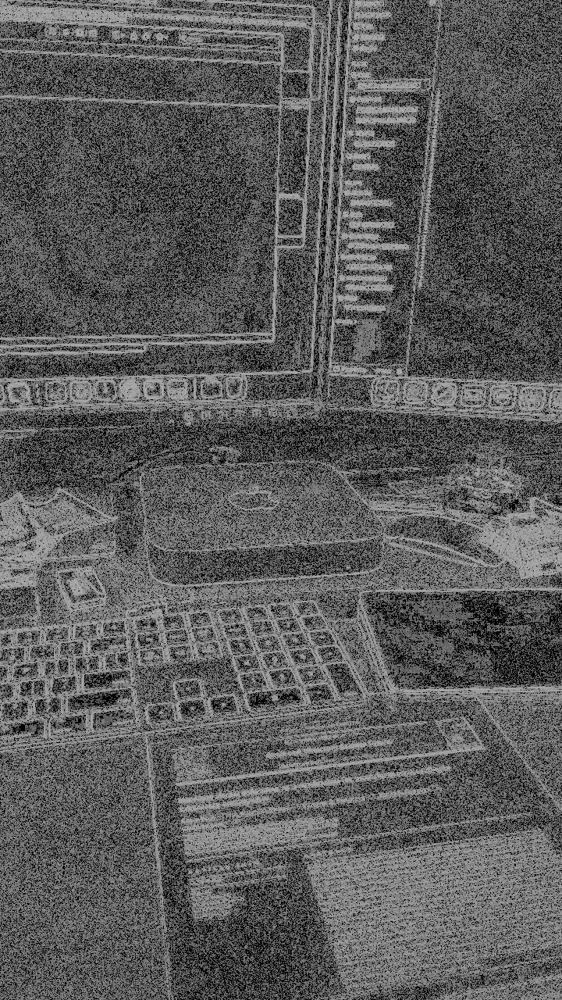
diff_fo)
Prominent macroblock boundaries and high-frequency edge quantization are immediately visible across all structural contours.
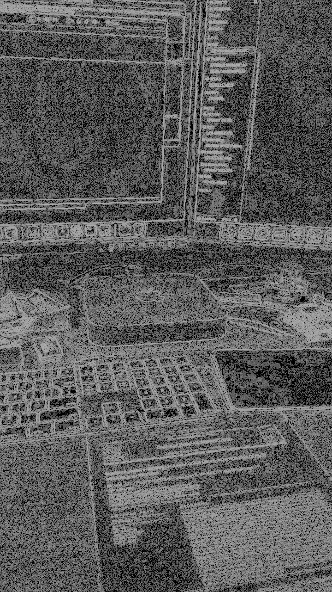
diff_so)
Temporal stacking fails to eliminate the grid structure, proving that spatial block quantization is systematic and unrecoverable.
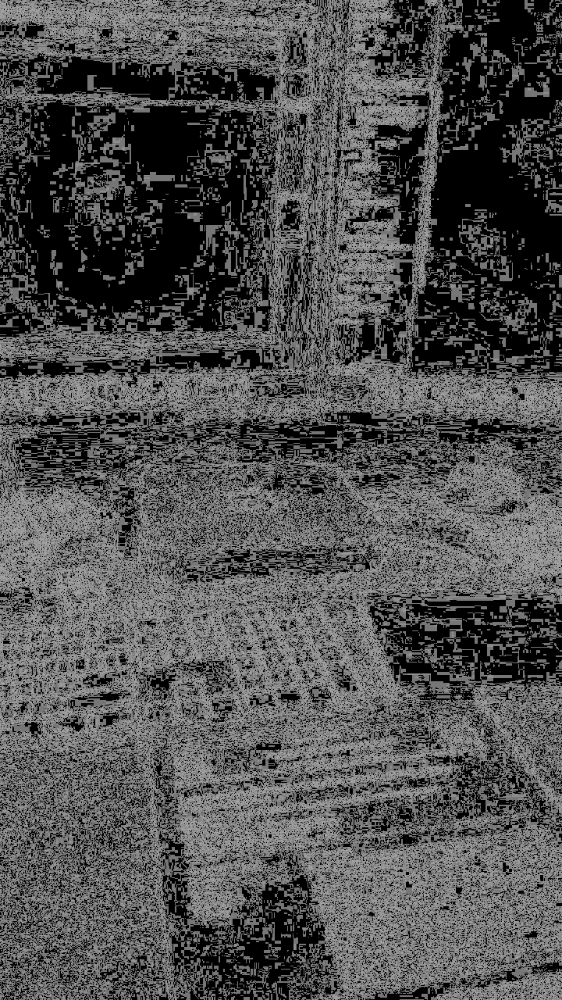
diff_fs)" loading="lazy" />diff_fs)
Isolates subtle intra-stream variations between frame 10 and the 45-frame temporal mean.
CASE 2: High-Resolution Native Capture (3024 × 4032)
In CASE 2, a full 12.2-megapixel mobile capture is encoded at 657 kbps. The spatial resolution is high, but the allocated bitrate per pixel drops precipitously. The difference maps reveal dramatic high-frequency filtering.
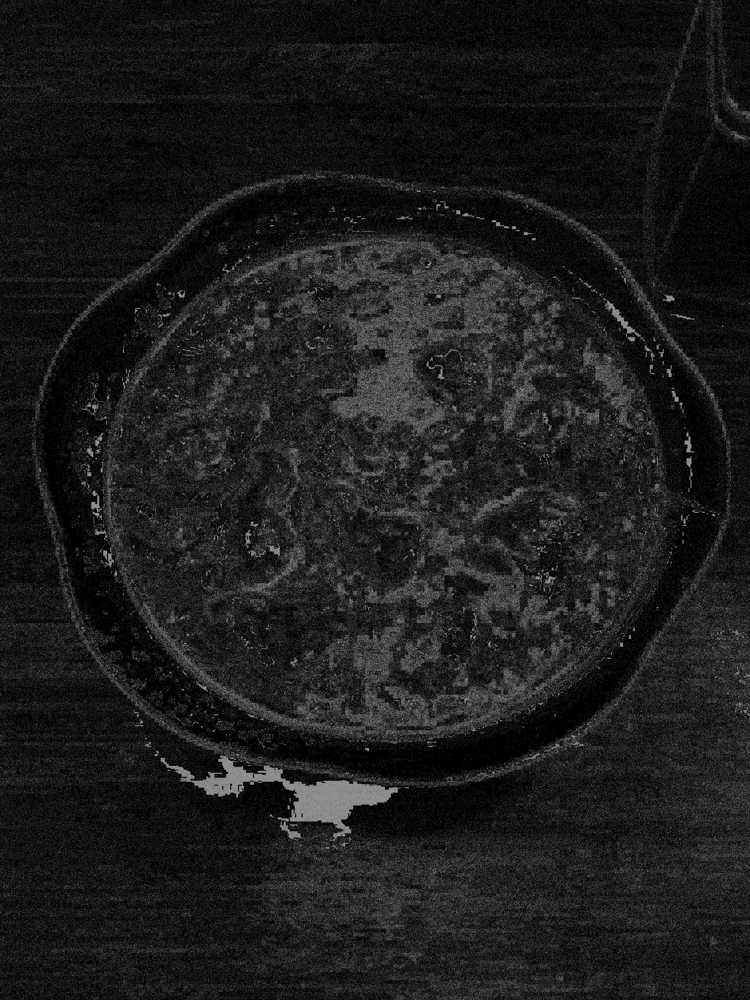
diff_fo)
High-contrast boundary halos illustrate phase errors and high-frequency coefficient cutoff along fine contours.
diff_so)
Averaging across 60 frames maintains nearly identical edge deviations, demonstrating the irreversibility of transform truncation.
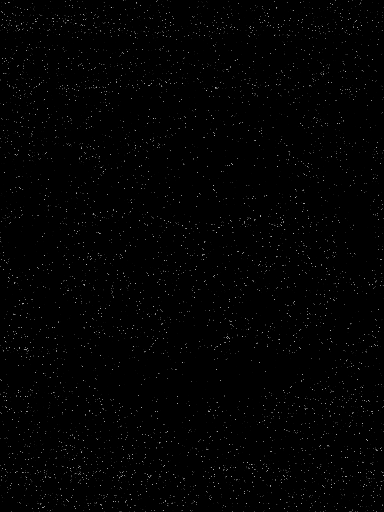
diff_fs)" loading="lazy" />diff_fs)
Residual temporal noise highlights subtle encoder rate-control fluctuations across static high-resolution blocks.
CASE 3: High Texture Complexity & High Entropy (3024 × 4032)
CASE 3 features a complex scene filled with micro-textures and dense details. The encoder’s rate-control algorithm automatically allocated the highest bitrate in our test suite (900 kbps), yet the structural loss remains intense.
diff_fo)
Dense energy across the entire frame indicates aggressive coefficient culling in high-frequency texture blocks.
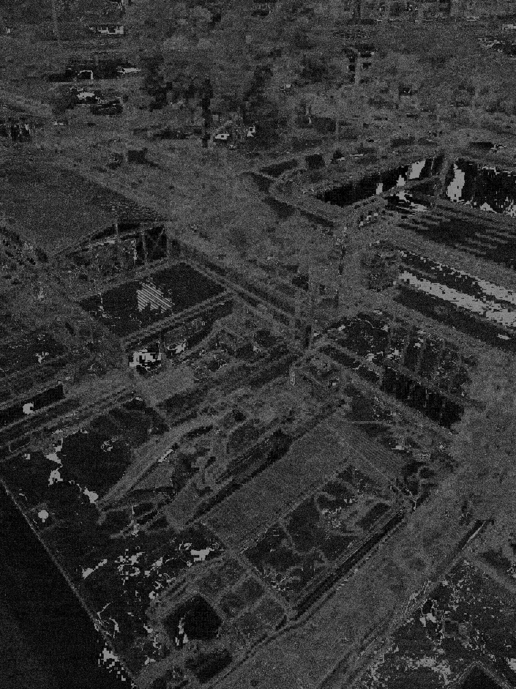
diff_so)
The stacked difference map closely tracks Figure 3A, confirming that rich micro-textures cannot be reconstructed via temporal pooling.
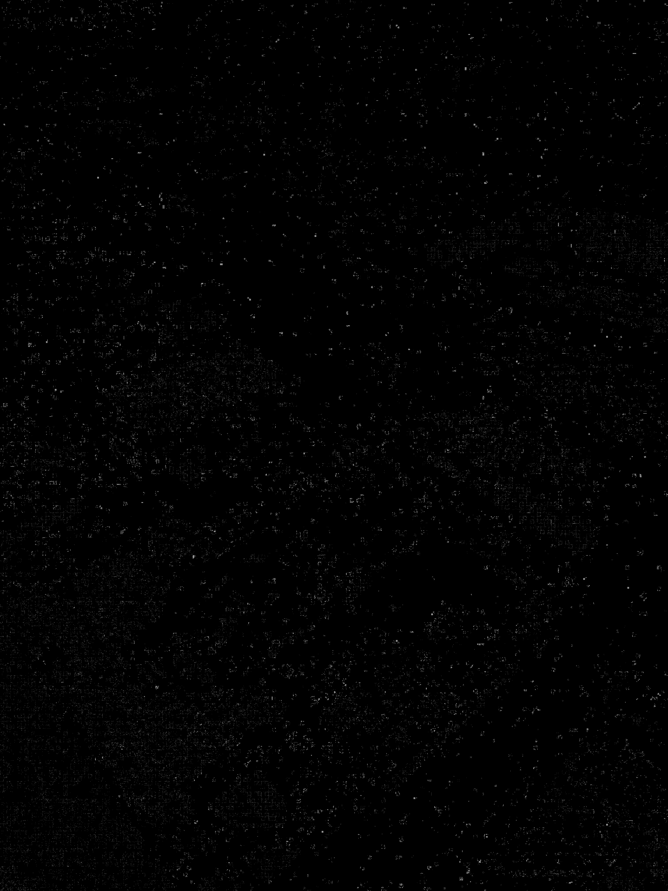
diff_fs)" loading="lazy" />diff_fs)
Fine-grained temporal variance distributed across high-frequency regions as the codec continuously adjusts local quantization.
CASE 4: Tonal Gradients & Smooth Field Boundaries (3024 × 4032)
CASE 4 evaluates performance across smooth luminance gradients and broader structural zones at 627 kbps. This case demonstrates how video encoding handles continuous-tone transitions.
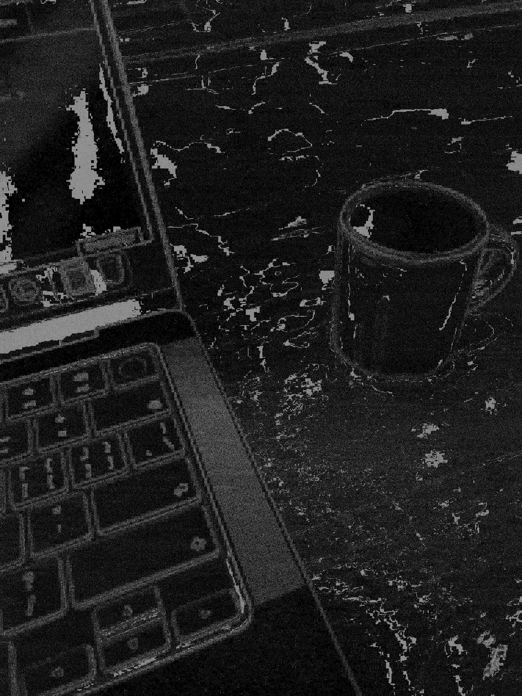
diff_fo)
Planar macroblock stepping and chroma smearing become evident along subtle gradient transitions.
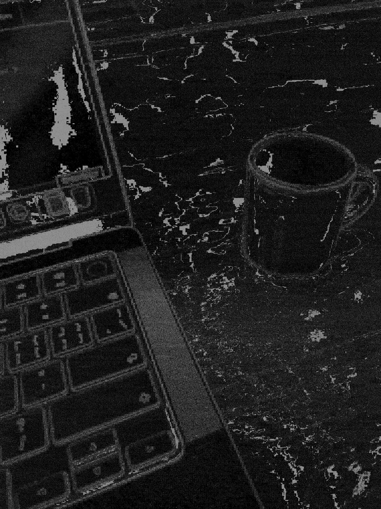
diff_so)
Quantization steps remain rigid in the stacked image, confirming persistent bit-depth reduction in smooth fields.
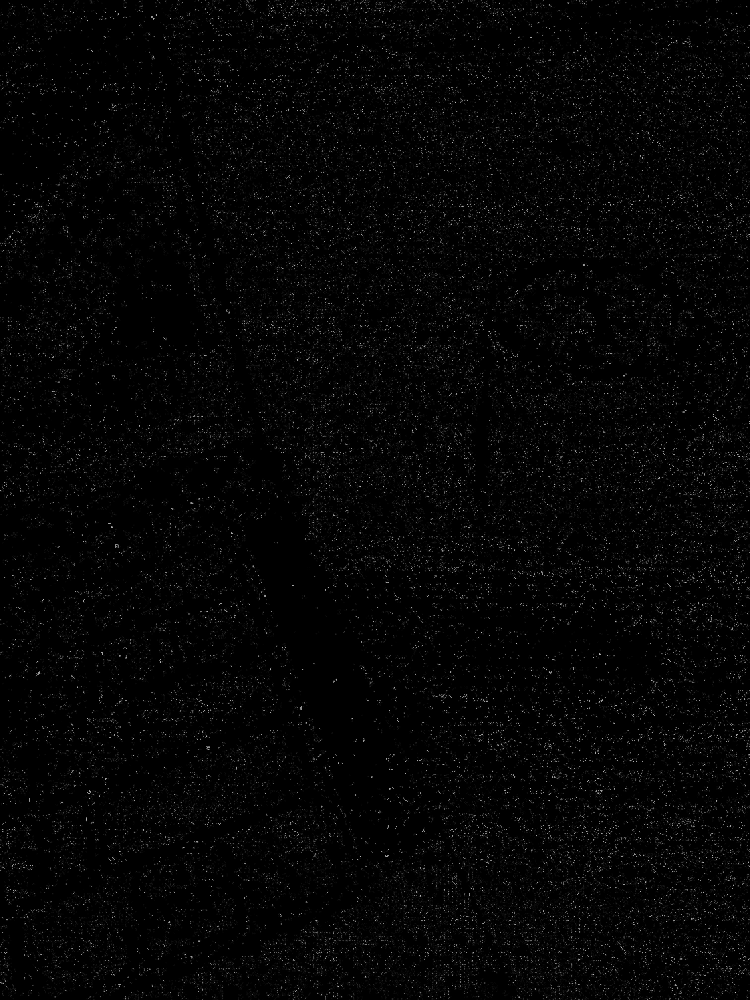
diff_fs)" loading="lazy" />diff_fs)
Temporal differential reveals localized encoder dithering across continuous tonal zones.
CASE 5 & CASE 5-Long: Duration Scaling & Long-Term Encoder Drift
To test the limits of multi-frame temporal stacking, CASE 5 (60 seconds, 60 frames) and CASE 5-Long (600 seconds, 600 frames) were run on the exact same high-resolution photograph.
Over a 10-minute stationary stream, the encoder’s long-term rate control drops the average bitrate to 216 kbps as motion-vector
skips saturate the stream. Stacking 600 frames pushes the temporal ensemble average toward an asymptotic stationary limit.
Comparing diff_fs between CASE 5 and CASE 5-Long reveals a stark phenomenon:
diff_fo, 60s)
Baseline single-frame compression envelope at 637 kbps.
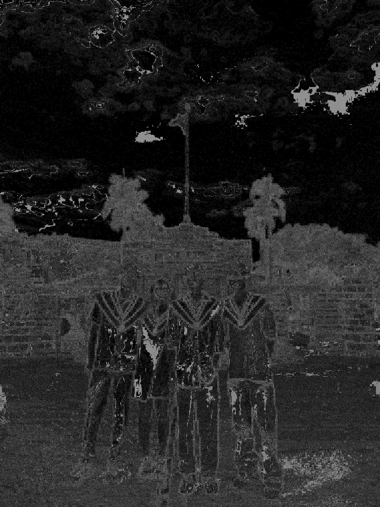
diff_so, 60s)" loading="lazy" />diff_so, 60s)
60-frame stacked residual showing persistent quantization boundaries.
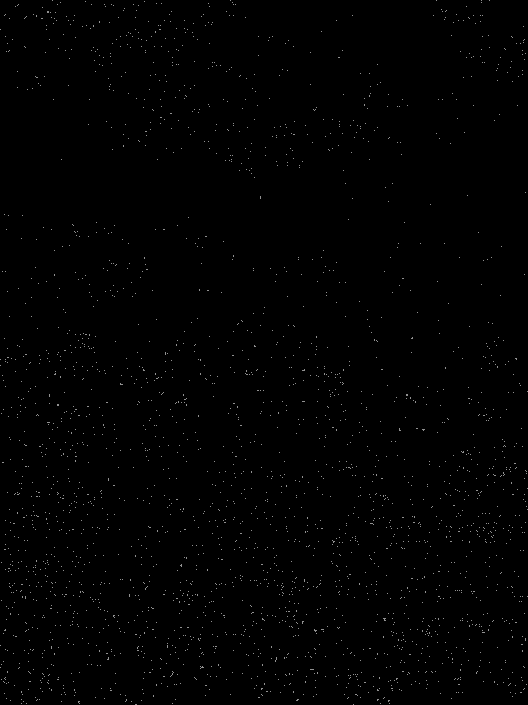
diff_fs, 60s)" loading="lazy" />diff_fs, 60s)
Short-duration temporal variance (file size: 295 KB).

diff_fo, 600s)
Single frame extracted from the extended 10-minute stream.
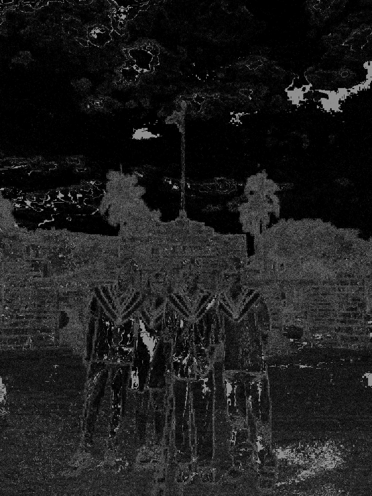
diff_so, 600s)" loading="lazy" />diff_so, 600s)
600-frame ensemble average. Structural error remains completely unyielding.
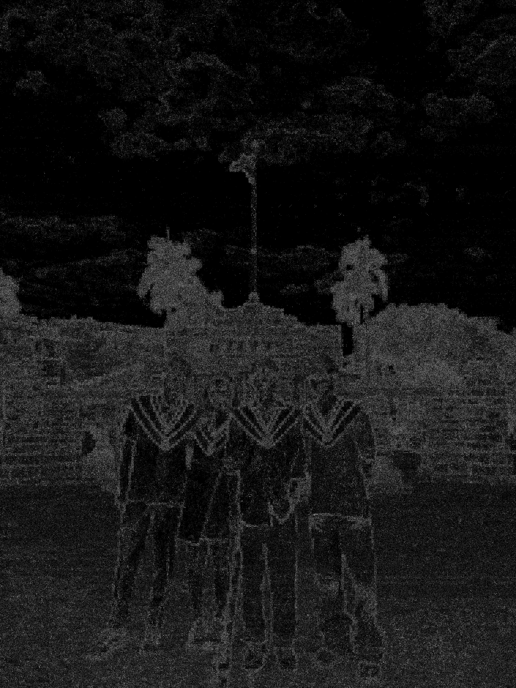
diff_fs, 600s)" loading="lazy" />diff_fs, 600s)
Extreme temporal differential (file size: 2.4 MB). 600-frame stacking cleanly isolates the complex encoder drift.
Key Insight from CASE 5 vs. CASE 5-Long:
In Figure 5C (60 frames), diff_fs appears relatively sparse because the 60-frame mean is still heavily
influenced by individual frame fluctuations. But in Figure 6C (600 frames), the 10-minute ensemble mean reaches a pure
stationary baseline. This causes the difference map file size to jump eightfold (from 295 KB to 2.4 MB), vividly exposing
how H.264 encoders periodically insert IDR refreshes, shift bit allocations, and drift across macroblocks over time
even when the source image has not changed by a single pixel.
Mechanics of What We Lose
Synthesizing the results across all six test cases reveals three mathematical realities of photo-to-video conversion:
1. The 75% Color Loss (YUV420p Subsampling)
Static photo viewers render in full RGB 4:4:4 or high-quality JPEG chroma schemes. Standard video distribution, however, enforces YUV420p. In 4:2:0 subsampling, U and V chrominance channels are downsampled by a factor of 2 in both horizontal and vertical dimensions. A $3024\times 4032$ image contains roughly 12.2 million luma ($Y$) samples, but only 3.05 million chroma ($U, V$) samples. Fine chromatic boundaries—such as red text against dark backgrounds or delicate skin color transitions—suffer an immediate 4× reduction in spatial fidelity before any DCT compression even begins.
2. Loss of High Spatial Frequencies via DCT Quantization
Video codecs split frames into blocks and apply 2D Discrete Cosine Transforms: \[F(u, v) = \sum_{x=0}^{N-1}\sum_{y=0}^{N-1} f(x, y) \cos\left[\frac{\pi}{N}\left(x+\frac{1}{2}\right)u\right]\cos\left[\frac{\pi}{N}\left(y+\frac{1}{2}\right)v\right]\] The resulting frequency coefficients $F(u, v)$ are divided by a quantization matrix $Q(u, v)$ and rounded to the nearest integer. In video codecs, $Q(u, v)$ heavily penalizes high-frequency $(u, v)$ terms because in moving video, the human visual system experiences temporal motion blur and cannot resolve fine textures. When applied to a static photo, this quantization zeroes out film grain, fabric textures, and subtle foliage details, turning them into flat blocks.
3. Irreversibility: Why Stacking Cannot Recover the Original
In classical signal processing, if noise is zero-mean and uncorrelated ($\mathbb{E}[\epsilon] = 0$), averaging $N$ observations reduces noise variance by a factor of $\sqrt{N}$. However, our comparison between $D_{FO}$ and $D_{SO}$ across all test cases proves that video compression error is predominantly deterministic and systematic ($\mathbb{E}[\epsilon] \neq 0$). Quantization is a truncation operator, not additive Gaussian noise. Once a high-frequency coefficient is quantized to zero, no amount of multi-frame averaging can restore the truncated information.
Practical Takeaways for Creators
Understanding these underlying mechanics suggests concrete strategies when posting visual work on social platforms:
- Keep Still Images Static When Fidelity Matters: If the priority is showcasing fine photographic detail, sharpness, or subtle color grades, avoid adding background music stickers or animated widgets that trigger video conversion.
- Pre-Render in High-Quality Video Containers: If music or motion is essential, do not let mobile app transcoders perform real-time downsampling on the fly. Pre-render the photo and audio in a dedicated video editor using a high bitrate ($>15\text{ Mbps}$), explicit color primaries (Rec.709), and optimal 1080×1920 canvas scaling to minimize double-compression artifacts.
- Increase Contrast on Key Edges: Because 4:2:0 subsampling blurs chroma boundaries, high-contrast luminance edges survive video compression significantly better than subtle chromatic transitions.
Video compression was engineered to make moving worlds feel smooth and lightweight across mobile networks. It is a masterpiece of perceptual engineering for motion—but when asked to hold a single still photograph, the very assumptions that make video efficient become the mechanisms that dismantle its quietest details.